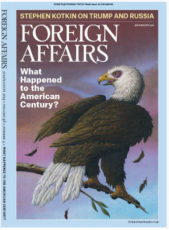

收录于合集

作品简介
【作者】
Ernest J. Moniz 是核威胁倡议组织（NTI）联合创始人、联合主席兼首席执行官，2013-2017年任美国能源部部长。Sam Nunn是核威胁倡议组织（NTI）联合主席，前佐治亚州参议员。
【 编译】 刘金晶(国政学人编译员，外交学院国际关系研究所）
【校对】 李博轩
【审核 】 王国欣
【排版】 ****赵怡雯
【 来源 】
Ernest J. Moniz, Sam Nunn, “The Return of Doomsday——The New Nuclear Arms Race- and How Washington and Moscow Can Stop It,” Foreign Affairs , Vol.98 Issue4, 2019, pp.150-161.
期刊介绍

由美国深具影响力的智库外交关系委员会（Council on Foreign Affairs）出版的双月刊，撰稿者多为美国深具影响力的学者和政府决策官员，从中可窥探出美国外交政策的最新走向。
末日回归： 面对新一轮核武竞赛，美俄应当如何阻止
The Return of Doomsday——The New Nuclear Arms Race-and How Washington and Moscow Can Stop It
内容提要
当前，美俄两国的局势，特别是在军事领域正剑拔弩张。早该随着冷战的结束而终止的灾难性假想似乎有重燃之势：所有要素均已具备，只欠导火索的引燃。本文作者分析当前美俄之间冲突与重重利害关系，认为美俄之间缺乏战略稳定性，缺少沟通交流渠道。基于此，本文作者建议，美俄双方应当重返谈判，重建对话机制，破解军事冲突升级的怪圈。时间来到2020年。俄罗斯军队在接近北约成员国立陶宛和波兰的加里宁格勒进行大规模军事演习。西方联盟的一架观察飞机误入俄领空，被俄地对空导弹击落，北约随即派出战斗机群进入事发区域。双方相互威胁称，如果威胁到各自的核心利益，将考虑使用核武器。在俄罗斯入侵克里米亚后，中东局势骤然紧张：军控协定崩溃，新型核武器得到部署，北约和俄罗斯加紧备战。美俄冲突不断，交锋不止。在美国，总统大选候选人将对俄态度坚定作为政治正确。在俄罗斯，领导人的反美言论得到民众支持。与此同时，对俄罗斯预警系统的网络攻击，北约对俄在加里宁格勒的海军和空军基地模拟空袭，这一系列事件引发了新一轮俄罗斯-
北约（Russia-
NATO）对峙。以上这些设想本应属于冷战时期，但就当前局势而言，其仍有发生的可能。当前，所有基本要素都已经存在，只差一根点燃火药桶的导火索。尽管经历了数十年的裁军，但美俄双方仍保有超过世界上90%的核武器——8000多个核弹头，这足以多次摧毁对方甚至整个世界。
近来，地缘政治的紧张态势削弱了美俄之间的战略稳定性（Strategic stability），
它包括一系列得以在和平时期稳定双方之间战略关系与避免正面核交锋的程序、机制与协定，以及为避免首先使用核武器而进行的军事武器部署的努力。但是，当前除了军控条约失效、交流渠道关闭、以及冷战的旧式核态势持续之外，又增添了网络空间威胁和军事技术发展这样的不稳定因素。这些均证实美俄之间已处于战略不稳定时期，任何一个意外都将引发一场大灾难，而美俄似乎对此熟视无睹。
因此，本文作者认为，美俄需要共同阻止这一灾难的爆发，美俄双方可以通过重建对话机制，管控分歧，在面对核威胁时尽力合作，来重新构建其战略稳定性。 **
** 文章导读
一、 导弹与不信任 ****
过去二十年间的国家利益交锋与零和安全政策使俄罗斯与西方国家关系紧张，缺乏信任。 首先，双方之间的不信任感由来已久。苏联解体后，巴尔干冲突、科索沃危机与北约扩大为双方早期关系蒙上一层阴影。普京与小布什各自上台后的交锋也加剧了双方之间的冲突。2008年，俄罗斯入侵格鲁吉亚加深美对俄不信任感。随后，在2011年，北约干预利比亚政权更迭加重俄对西方国家的疑虑。直到2014年，俄罗斯吞并克里米亚事件导致以美国为首的西方国家对俄直接进行经济制裁，以及双方军事力量在波罗的海和黑海地区对峙，险致灾难性后果。其次，数十年来军控条约的崩溃恶化了这一态势。军控条约致力于使双方常规武器与核武保持克制、透明与可预测。但近年来，双方的行为朝着最坏的结果方向发展。2002年，美国退出《反导条约》。5年后，俄罗斯宣布暂停履行《欧洲常规武装力量条约》。今年美国决意退出《中导条约》，俄罗斯紧随其后。同样，《全面禁止核试验条约》与2010年签订的《新削减战略武器条约》前景也不明朗。（编译者注：原文作者在时间方面有讹误，美国退出《反导条约》的时间是2001年。）再次，现有武器威慑力度的下降，以及新型军事的技术进步进一步破坏了军事力量平衡。网络攻击易造成指挥系统的错误警报，高超音速武器可以增强即时打击能力，获得先发制人优势。外太空领域的军事化也是各国相互竞争的领域之一。最后，所有以上因素带来的危害都不及俄罗斯与西方国家之间沟通渠道的缺乏，尤其是在防务和外交领域内的人员与军事沟通。即使在冷战最严重的时期，也没有出现当前的这种沟通脱节情况。在冷战时期，双方仍旧就武器谈判等议题保持定期谈判。但在当前，西方国家已将开展对话作为对俄罗斯积极行为的奖励，而非必要的外交手段。而不充分的对话只会带来沟通障碍，加剧双方对立。 从美国的角度出发，本文作者认为美国内部政治分裂与北约内部不团结是对话终结的原因。 美国国会内部对特朗普与俄罗斯关系的怀疑与不信任，加剧了其对俄罗斯的仇视。同样，特朗普的对欧政策削弱了跨大西洋伙伴关系的团结，北约成员国在选择对俄接触或对抗间徘徊犹豫。
二、 俄罗斯现状 ****
即使俄罗斯当前面临一系列的问题，诸如经济单一，政治过度依赖领导人等，但考虑到其拥有的广袤土地、联合国常任理事国地位、常规军队以及其强大的核武力量，在未来的很长一段时间内，俄罗斯依旧是国际社会中一支重要力量。俄罗斯有能力在美国利益区搅乱局势，引发危机。作者认为双方都应当确保这样的对抗不会失控，或者更好的是从一开始就阻止冲突发生。因此作者建议西方与俄罗斯进行适度的战略接触，这就要求西方继续保持其对俄罗斯越界行为进行威慑的同时也在减少核威胁方面与俄寻求合作。简而言之，美国和其他北约国家的领导人应该清醒地认识到他们与俄罗斯之间的分歧，并在这一前提下就共同防止使用核武器带来的危险这一重大问题开展对话。
三、 重回谈判桌 ****
要重新开展与俄富有成效的对话，美国首先需要的是总统与国会在对俄政策问题上重建工作关系。由于当前特朗普总统与国会民主党议员之间存在不信任，两党的领导权便至关重要。美国可以组建一个由众议院和参议院领袖组成的两党联络小组来重点负责对俄政策与核风险议题。在处理相关事务时，两党领袖拥有委员会主席与行政官员的双重身份，便可以加强两党的行政- 立法力量，从而增强美国在处理俄罗斯问题的能力。其次，为了保持军事透明与增强军方信任，美国、北约与俄罗斯应该重新开展包含各自核武器指挥官的危机管理对话。同时，三方还应在涉及共同利益领域议题上重新开放核科学界和专家团体间的接触渠道，诸如防止核污染和放射性污染、提高核反应堆的安全性等。而随着合作的逐渐恢复，美国和俄罗斯可能会采取更为具体的措施，以延缓新的核武器竞赛。这在《中导条约》可能彻底失效的情况下对国际安全至关重要。
四、 打破事态升级怪圈 ****
另一项优先任务是要找到方法，在紧急时刻给予国家领导人更多时间，来决定是否使用核武器，尤其是当领导人认为本国即将遭受核打击时。 当前美俄领导人拥有的确认核武器攻击以及是否采取对应报复行动的考虑时间极其有限。以高超音速导弹为代表的军事技术升级和网络攻击等新一类危险又大大缩短了这一考虑时间。假设俄罗斯与北约在交界处大力加强军事部署，随着军事事态的紧急升级和焦虑的加剧，在这千钧一发的时刻，军事领导人做出错误决定的风险将大大上升。面对这一危险，美俄当前需要各自军方共同协作以减少担忧，增加反应时间以做出正确决定。作者认为，美国与俄罗斯在欧洲直接部署核武器并不会成为各方的优势，反而是潜在的安全风险，因为任何使用核武器的行为都会引发进一步的事态升级。 其次，双方及时交换关于军事行动和军事能力的信息将有助于确保即时打击系统不影响战略稳定性， 因为这有助于提高非核武器即时打击系统的透明度。同时，常规武器与核武器的分离也有助于确保早期的警报系统不会将常规武器攻击误认为核武攻击。 **** 再次，美俄双方还应当在网络空间以及外太空领域加强合作，共同制定新领域的红线。 当前这两个新领域基本不受监管，第三方国家有可能会威胁美俄在这两个领域的共同利益。为此，美俄可以建立一个在外太空以信息交换为重点的试点项目，避免双方在外太空领域的碰撞和冲突。 **** 最后一点，也是至关重要的一点：美俄双方应当合作制定核武器发展核心准则。 1985年美国总统里根与苏联总统戈尔巴乔夫首次发声称：“核战争是一场不能打的战争，因为没有一个国家可以从中得胜利。”放在今天，这也是当前关于核武器共识的基础之一。
五、 为时未晚 ****
几十年来，美国和俄罗斯之间的战略稳定性包括双方形成的重大利益共识、对底线的认知、共同致力于减少事故或误判导致冲突的风险（特别是核武器的使用）。但是当前的新形势动摇了旧有的力量平衡：两国间国家利益冲突不断，对话渠道稀缺，军控制度日渐失效，军事技术更新升级与网络武器的运用加剧了风险。 纵然美国国内对俄罗斯仍旧抱有强烈的敌意，但本文作者认为，当前两国间总统的对话机制至关重要，国会必须确立两党合作的基调，支持美国与俄罗斯进行沟通、开展合作，以减少军事上，特别是涉及核武器的风险。否则，美国的国家利益将面临严重危机。 约翰·肯尼迪，这位在古巴导弹危机中比任何其他美国领导人都更接近末日的总统曾说：“人类在几千年的磨练和考验中幸存下来，绝不是为了现在放弃一切，包括自身的存在。”时至今日，战略稳定的基础正在缓慢但可以预见地走向崩溃，美俄双方却都认为时间站在自己一边。但事实绝不是这样。
_ ** _ ** _ ** _ 本文由国政学人独家编译推荐**__
扫下方二维码查看往期精彩
【新刊速递】第01期 | Review of International Studies Vol.45, No.4, 2019
【新刊速递】第02期 | International Relations Vol.33, No.3, 2019
【新刊速递】第03期 | International Organization Vol.73, No.3, 2019
【新刊速递】第04期 | World Politics, Vol.71, No.4, 2019
【新刊速递】第05期 | European Journal of International Relations
【新刊速递】第06期 | Security Studies, Vol.28, No.4, 2019
分类导览 1
分类导览 2

点“在看”给我一朵小黄花